Ciencia de datos con Python
Instituto de Energías Renovables, UNAM
6to Coloquio de Energía
28 de septiembre de 2026
Todo el código de esta presentación, celda por celda, listo para ejecutarse sin instalar nada. Solo necesitas una cuenta de Google.
El cuaderno se genera a partir de este mismo archivo (scripts/generar_cuaderno.py), así que siempre coincide con las diapositivas.
Sesión 1 · La charla
Sesión 2 · La app, celda por celda
¿Qué tiene Python que no tengan Excel, MATLAB o R?
pvlib, windpowerlib, PyPSA, oemof, pandapower.Python no es la herramienta más rápida ni la más elegante: es la que conecta todo lo demás.
¿Cuántas líneas hacen falta para calcular y graficar la irradiancia de un día despejado en Torreón?
import pandas as pd
import matplotlib.pyplot as plt
from pvlib.location import Location
torreon = Location(latitude=25.54, longitude=-103.41,
tz="America/Mexico_City", altitude=1120, name="Torreón")
horas = pd.date_range("2026-03-21", "2026-03-22", freq="10min", tz=torreon.tz)
cielo = torreon.get_clearsky(horas, model="ineichen", linke_turbidity=3.0)
fig, ax = plt.subplots(figsize=(9, 3.8))
cielo[["ghi", "dni", "dhi"]].plot(ax=ax, lw=2)
ax.set_ylabel("Irradiancia (W/m²)")
ax.set_xlabel("Hora local")
ax.set_title("Equinoccio de primavera · cielo despejado")
ax.legend(["GHI", "DNI", "DHI"], frameon=False)
ax.grid(alpha=.3)
plt.tight_layout()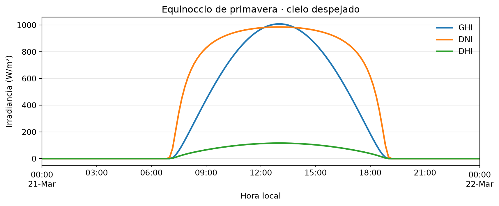
pvlib nació en Sandia National Labs).Pregunta para la audiencia
¿Cuántas de sus hojas de cálculo podrían regenerarse hoy desde cero, sin intervención manual?
Importamos las bibliotecas: pandas para tablas con tiempo, numpy para matemáticas, matplotlib para gráficas y pvlib para la física solar.
Creamos el sitio: dónde está Torreón, en qué zona horaria y a qué altura.
Creamos el reloj: un instante cada 10 minutos durante el 21 de marzo, en hora local de Torreón.
Calculamos la irradiancia de un día sin nubes: una tabla con GHI, DNI y DHI para cada instante.
cielo: un renglón por instante, tres columnas| ghi | dni | dhi | |
|---|---|---|---|
| 2026-03-21 06:00:00-06:00 | 0.0 | 0.0 | 0.0 |
| 2026-03-21 09:00:00-06:00 | 440.0 | 829.0 | 66.0 |
| 2026-03-21 12:00:00-06:00 | 969.0 | 979.0 | 113.0 |
| 2026-03-21 15:00:00-06:00 | 858.0 | 960.0 | 103.0 |
| 2026-03-21 18:00:00-06:00 | 187.0 | 616.0 | 38.0 |
El índice es la hora local. Cada columna es una irradiancia en W/m².
ghi · global horizontal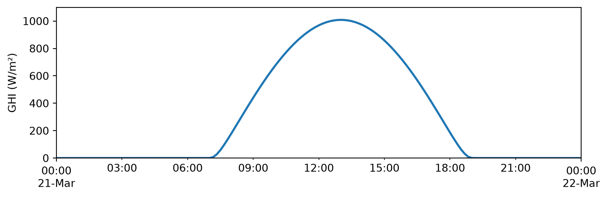
Todo lo que cae sobre un metro cuadrado de piso horizontal.
dni · directa normal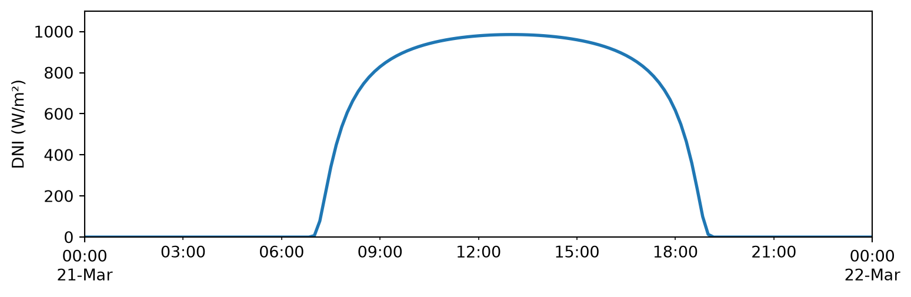
Lo que llega en línea recta desde el disco solar, medido de frente al Sol.
dhi · difusa horizontal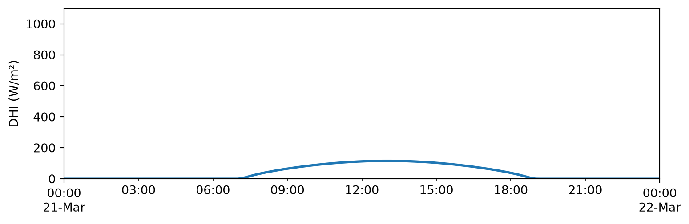
Lo que llega del resto del cielo, sin el disco solar: la luz que hay en la sombra.
cielo a una superficie\[ G_{\text{sup}} = \underbrace{\text{DNI}\cdot\cos\theta}_{\text{1 · directa}} \;+\; \underbrace{\text{DHI}\cdot\frac{1+\cos\beta}{2}}_{\text{2 · difusa del cielo}} \;+\; \underbrace{\text{GHI}\cdot\rho\cdot\frac{1-\cos\beta}{2}}_{\text{3 · reflejada por el suelo}} \]
Tres caminos, y cada uno usa una columna distinta de la tabla. Solo aparecen tres datos nuevos:
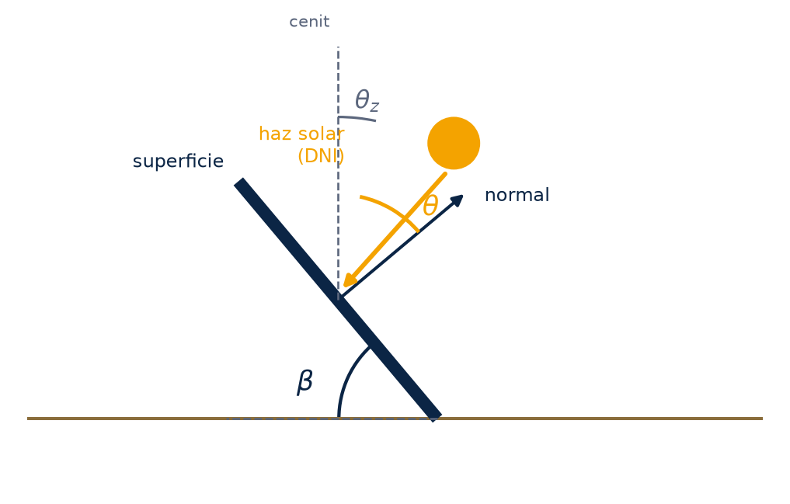
| Superficie | \(\beta\) | Fracción de la bóveda |
|---|---|---|
| horizontal | 0° | 1: toda |
| inclinada | 30° | 0.93 |
| pared | 90° | ½ |
| boca abajo | 180° | 0: nada |
| Suelo | \(\rho\) típico |
|---|---|
| asfalto | 0.10 |
| pasto | 0.20 |
| concreto | 0.30 |
| arena | 0.40 |
| techo blanco | 0.70 |
| nieve fresca | 0.85 |
| apparent_zenith | azimuth | |
|---|---|---|
| 2026-03-21 06:00:00-06:00 | 103.5 | 83.0 |
| 2026-03-21 09:00:00-06:00 | 63.1 | 103.5 |
| 2026-03-21 12:00:00-06:00 | 29.0 | 147.4 |
| 2026-03-21 15:00:00-06:00 | 38.1 | 233.6 |
| 2026-03-21 18:00:00-06:00 | 76.1 | 263.8 |
Para cada instante, dónde está el Sol: el ángulo cenital, desde la vertical, y el azimut, con 0° = N, 90° = E, 180° = S. La tabla sol trae más columnas; estas dos son las que usa la ecuación.
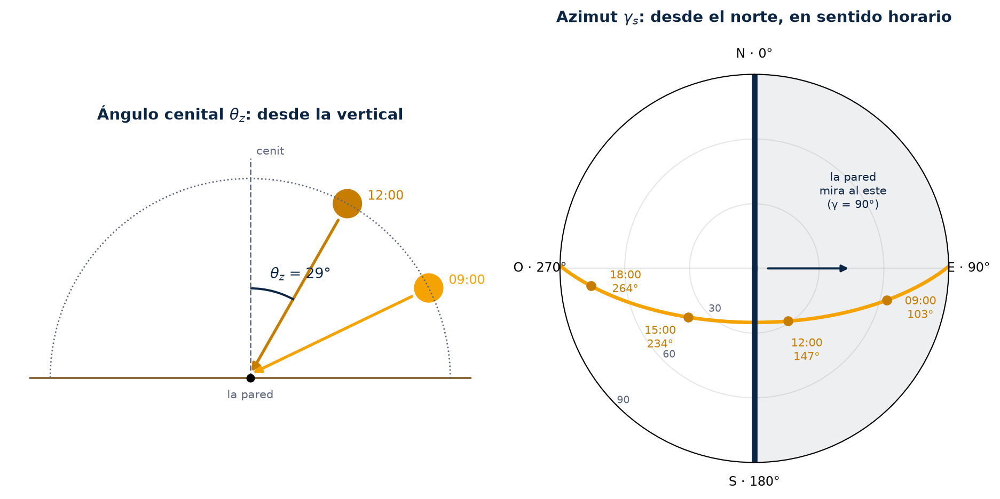
\(\theta_z\) se mide desde la vertical. \(\gamma_s\) se mide sobre el suelo, desde el norte y en sentido horario. La pared al este solo tiene al Sol de frente mientras \(\gamma_s\) está entre 0° y 180°: por la mañana.
Una pared vertical (β = 90°) que mira al este (γ = 90°) con pasto enfrente (ρ = 0.20).
pared: los tres términos y su suma| poa_global | poa_direct | poa_diffuse | poa_sky_diffuse | poa_ground_diffuse | |
|---|---|---|---|---|---|
| 2026-03-21 06:00:00-06:00 | 0.0 | 0.0 | 0.0 | 0.0 | 0.0 |
| 2026-03-21 09:00:00-06:00 | 796.0 | 719.0 | 77.0 | 33.0 | 44.0 |
| 2026-03-21 12:00:00-06:00 | 410.0 | 256.0 | 153.0 | 56.0 | 97.0 |
| 2026-03-21 15:00:00-06:00 | 137.0 | 0.0 | 137.0 | 52.0 | 86.0 |
| 2026-03-21 18:00:00-06:00 | 38.0 | 0.0 | 38.0 | 19.0 | 19.0 |
poa_direct, poa_sky_diffuse y poa_ground_diffuse son los términos 1, 2 y 3. poa_diffuse suma los dos últimos y poa_global es el total: lo que recibe la pared.
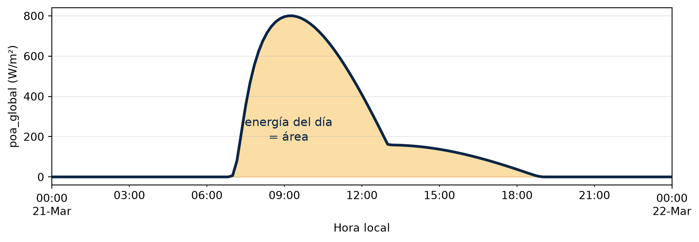
poa_global es potencia por metro cuadrado en cada instante: W/m². Como la velocidad de un coche.3.96 kWh/m² en el díaSumamos todos los renglones de poa_global y multiplicamos por la duración de cada uno. Es el área bajo la curva, en kWh por metro cuadrado de pared.
orientaciones = {"Norte": 0, "Este": 90,
"Sur": 180, "Oeste": 270}
paredes = {}
for nombre, azimut in orientaciones.items():
poa = irradiance.get_total_irradiance(
surface_tilt=90, surface_azimuth=azimut,
solar_zenith=sol["apparent_zenith"],
solar_azimuth=sol["azimuth"],
dni=cielo["dni"], dhi=cielo["dhi"],
ghi=cielo["ghi"], albedo=0.20)
paredes[nombre] = poa["poa_global"]
paredes = pd.DataFrame(paredes)Un ciclo: la celda 7 cuatro veces, cambiando solo el azimut. Guardamos poa_global de cada pared en una tabla.
Norte 1.19
Este 3.96
Sur 4.13
Oeste 3.96
dtype: float64kWh/m² en el día para cada orientación, con el mismo cálculo de la celda 8 aplicado a las cuatro columnas a la vez.
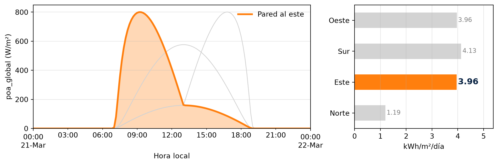
Pico en la mañana, cuando el Sol está de frente. A partir de las 13:00 solo recibe difusa y reflejada. Área bajo la curva: 3.96 kWh/m².
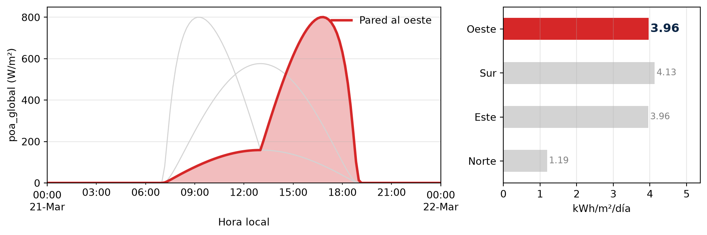
El espejo del este: la misma curva, en la tarde. En el equinoccio la energía es idéntica: 3.96 kWh/m².
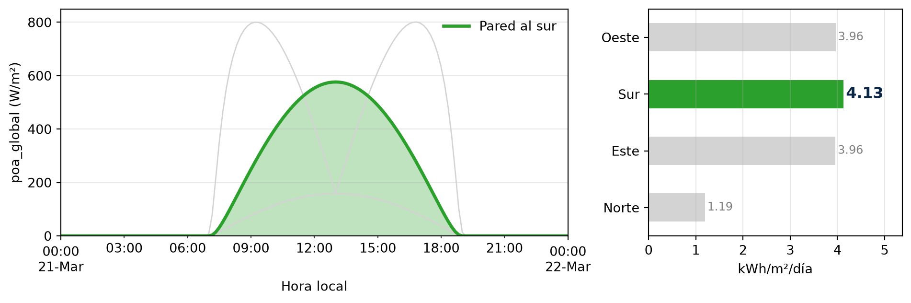
Ve al Sol todo el día, pero nunca de frente: el pico es más bajo y la curva más ancha. Es la que más junta: 4.13 kWh/m².
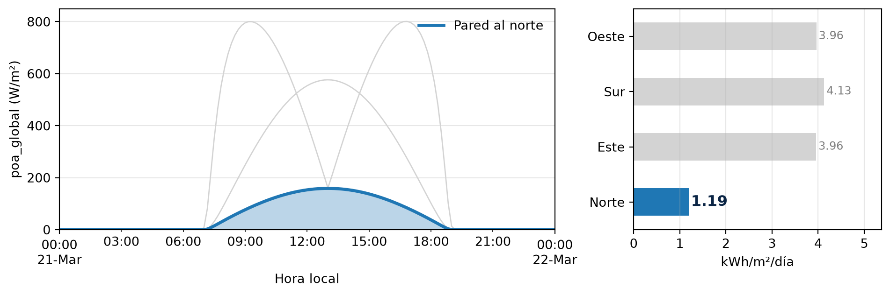
En el equinoccio nunca tiene al Sol de frente: solo difusa y reflejada, la misma curva baja que este y oeste cuando pierden la directa. Junta 1.19 kWh/m², menos de un tercio del sur.
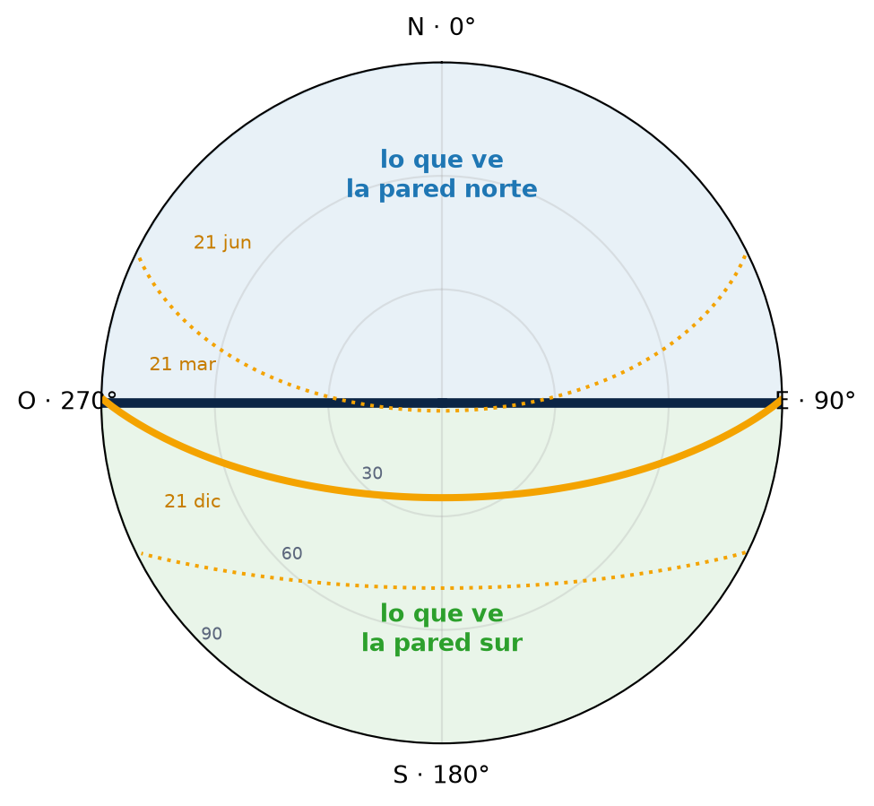
El 21 de marzo el Sol sale por el este, cruza por el sur y se pone por el oeste: toda su trayectoria cae en la mitad que ve la pared sur y ninguna en la del norte. Por eso el norte solo recibe difusa y reflejada. En junio el Sol sale y se pone más al norte, y la pared norte sí recibe directa temprano y tarde.
6to Coloquio de Energía · IER-UNAM